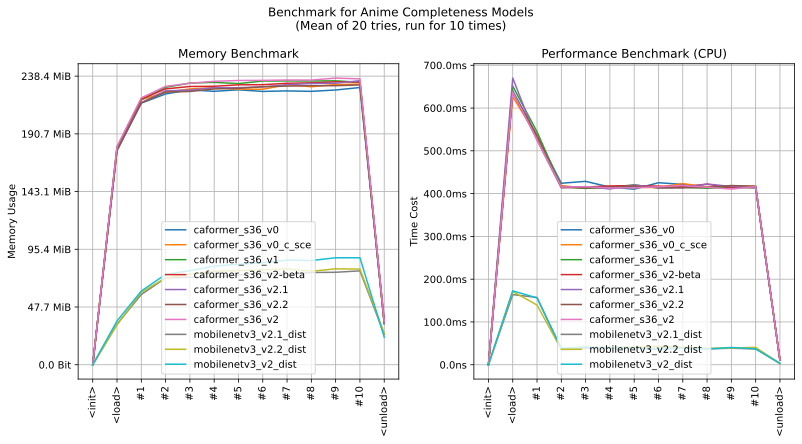

imgutils.validate.completeness
- Overview:
Rough Prediction of illustration’s completeness (
monochrome,roughandpolished).The following are sample images for testing.

This is an overall benchmark of all the completeness classification models:
The models are hosted on huggingface - deepghs/anime_completeness.
anime_completeness_score
- imgutils.validate.completeness.anime_completeness_score(image: str | PathLike | bytes | bytearray | BinaryIO | Image, model_name: str = 'mobilenetv3_v2.2_dist') Dict[str, float][source]
Rough Prediction of illustration’s completeness, and return the score.
- Parameters:
image (ImageTyping) – The input image.
model_name (str) – The model name. Default is ‘mobilenetv3_v2.2_dist’.
- Returns:
A dictionary with type scores.
- Return type:
Dict[str, float]
- Examples::
>>> from imgutils.validate import anime_completeness_score >>> >>> anime_completeness_score('completeness/monochrome/1.jpg') {'polished': 5.910087929805741e-05, 'rough': 0.1241951510310173, 'monochrome': 0.8757457137107849} >>> anime_completeness_score('completeness/monochrome/2.jpg') {'polished': 0.00018937293498311192, 'rough': 0.030049214139580727, 'monochrome': 0.9697614312171936} >>> anime_completeness_score('completeness/monochrome/3.jpg') {'polished': 0.008933082222938538, 'rough': 0.05096456781029701, 'monochrome': 0.9401022791862488} >>> anime_completeness_score('completeness/rough/4.jpg') {'polished': 0.009832272306084633, 'rough': 0.9898634552955627, 'monochrome': 0.00030428936588577926} >>> anime_completeness_score('completeness/rough/5.jpg') {'polished': 0.013919820077717304, 'rough': 0.9819902181625366, 'monochrome': 0.004089969675987959} >>> anime_completeness_score('completeness/rough/6.jpg') {'polished': 0.04166747257113457, 'rough': 0.9582782983779907, 'monochrome': 5.4218515288084745e-05} >>> anime_completeness_score('completeness/polished/7.jpg') {'polished': 0.8849249482154846, 'rough': 0.1149177998304367, 'monochrome': 0.0001573085755808279} >>> anime_completeness_score('completeness/polished/8.jpg') {'polished': 0.9907882809638977, 'rough': 0.008958994410932064, 'monochrome': 0.0002527958422433585} >>> anime_completeness_score('completeness/polished/9.jpg') {'polished': 0.9831690788269043, 'rough': 0.01682441122829914, 'monochrome': 6.613856385229155e-06}
anime_completeness
- imgutils.validate.completeness.anime_completeness(image: str | PathLike | bytes | bytearray | BinaryIO | Image, model_name: str = 'mobilenetv3_v2.2_dist') Tuple[str, float][source]
Rough Prediction of illustration’s completeness, return the predict result and its score.
- Parameters:
image (ImageTyping) – The input image.
model_name (str) – The model name. Default is ‘mobilenetv3_v2.2_dist’.
- Returns:
A tuple with the primary type and its score.
- Return type:
Tuple[str, float]
- Examples::
>>> from imgutils.validate import anime_completeness >>> >>> anime_completeness('completeness/monochrome/1.jpg') ('monochrome', 0.8757458329200745) >>> anime_completeness('completeness/monochrome/2.jpg') ('monochrome', 0.9697614312171936) >>> anime_completeness('completeness/monochrome/3.jpg') ('monochrome', 0.9401022791862488) >>> anime_completeness('completeness/rough/4.jpg') ('rough', 0.9898634552955627) >>> anime_completeness('completeness/rough/5.jpg') ('rough', 0.9819902181625366) >>> anime_completeness('completeness/rough/6.jpg') ('rough', 0.9582782983779907) >>> anime_completeness('completeness/polished/7.jpg') ('polished', 0.8849248290061951) >>> anime_completeness('completeness/polished/8.jpg') ('polished', 0.9907882809638977) >>> anime_completeness('completeness/polished/9.jpg') ('polished', 0.9831690788269043)